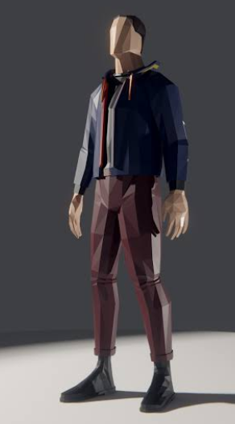

The city
Where the work starts, and where it comes back to.
A co-op offroad trucking game for up to eight players.
Haul heavy loads over rough ground and help rebuild a broken land, one delivery at a time.
In development by Hound Protocol. Nothing to download yet.
AFTERHAUL is a co-op offroad trucking game. You and up to seven friends run a hauling company in a land that has been knocked flat, taking jobs, moving heavy loads over bad ground and rebuilding as you go.
But that's not all. You might mix yourself up in suspicious activities, transporting illicit cargo for questionable characters and soaking your toes in bad business. The choices you and your crew make shape the future of each region.
AFTERHAUL takes place in a fictional country in conflict. The government has formed your crew into a national recovery task force, to help with specific logistical tasks. You rebuild region by region, fixing the country to help it win the war. The end of the road is an ongoing front line.
The campaign is a linear run of one-time contracts. Side quests open up small to medium-sized stories along the way.
You will meet characters with their own personalities, main quests and side quests: business owners, shop owners and ordinary people who need a bit of help, like moving everything in their house to a new place. And mafia bosses you've accidentally tangled with.
Expect big trucks, rough terrain, changing weather and a low-poly look. It is in early development, so there is a lot still to build.
Up to eight players run one company. Every driver has a trade: someone finds the line through the mud, someone carries the heaviest loads, someone keeps the crew fed, patched up and moving.
Leads the convoy and picks the line.
Moves the heaviest loads and runs the old trucks.
Keeps the crew alive.
Feeds the crew and stretches the supplies.
Keeps the trucks running between garages.
Gets stuck trucks moving again.
Stocks the convoy and protects its supplies.
Protects the convoy from wildlife and threats.
All operators are capable on their own, but specialized operators outperform other operators at what they're specialized for.
One land, many regions, all of it waiting to be rebuilt. The seasons turn, the weather bites, and every delivery leaves something standing that wasn't there before.
Placeholder animations. The moving scenes on these cards are stand-ins drawn for this website. They will be replaced by real gameplay when the game enters the Alpha stage.
Where the work starts, and where it comes back to.
Loose rock, steep grades, heavy cargo.
No roads. Mud to the axles.
Supplies that cannot wait.
An hour of nothing, and the heat.
Snow, ice and a road you can barely trust. Stop too long and the truck won't start again.
Before Afterhaul comes to fruition, our team was pondering over design choices that will define the personality of the game world.
Visceral, Intense, Loud & Charismatic
We want trucks to sound like raw machines with a punch to it. Treat the gas gentle, and the truck is going to respond gently. Hit the gas at 100%, and the truck will respond in a full spectrum.
Our vision of in-cab sound design and what we are aspiring to design in AFTERHAUL.
We predominantly source our inspiration of sound design from drag racing competitions, which we try our best to implement into the game with sound occlusion, distant sound processing, directional sound processing & more sound compression to achieve visceral & authentic sound design.
In Afterhaul, crashing your truck is going to be a cinematic, intimidating and audio-rich experience. Our goal is to make every object its own sound source, and we are developing a system that will allow the player to hear the entire chaos of their cabin in an orchestrated, natural format. We are learning how impacts, crashes and accidents sound, and how we can transform that intensity and atmosphere into Afterhaul accurately, as in the video provided.
In the war zone, artillery is something you hear before you see it: a distant shot, the whistle of the shell, then the impact. That sequence, and the dread it builds, is the sound we are aiming for.
The view should react to every hit. We want the head, the motion and the shake of a crash to be felt from the driver’s seat, and we look to this crash for how it should move.
Videos are other people's work, shown as inspiration. Their preview pictures and the videos themselves come from YouTube.
Afterhaul is a low poly / high detail project. We aim for high performance and accessibility on even lower end setups. Our goal is to achieve low poly design, with physics, especially applied to our Active-Ragdoll system characters.

AFTERHAUL is still in early development stages. More information will be posted here as the project is being developed, and upon launch of the BETA on Steam.
The design is written and the rules are being built and tested. Nothing is playable yet.
Date: to be announcedA rough, playable version: one truck, one region and a small crew. Invited testers help find what breaks.
Date: to be announcedMost of the game is in. The beta opens on Steam so more players can try it and report problems.
Date: to be announcedThe finished first version, ready for everyone.
Date: to be announcedDates are announced once each stage is close. Updates are posted here and in the changelog.
Follow along with Hound Protocol, the community organization making the game.
Discord will open up for access once the game has a prototype
The player guide, kept in folders. It is a draft: it describes the game as planned, and the game is not playable yet.
11 documentsAll documents
No documents match that search. Try a shorter word, or pick another folder.
AFTERHAUL is a co-op trucking game for up to 8 friends. The story takes place in a fictional country in conflict. Your crew is a national recovery task force: it hauls the materials that rebuild the land, one load at a time, to help win the war.
One player is the Operations Chief. The Chief hosts the world, takes the jobs and decides who joins the crew. The others are Operators. Money is nuts. Jobs come from employers.
Where to read next:
Status: draft. The game is in early development and this guide describes what is planned.
The Operations Chief sets each session to one of three levels:
There is no open session. Players who want to join a crew apply from the session browser. The Chief sees each applicant's standing as an icon and chooses who to accept.
Status: draft. Written from the design; not yet playable.
What is AFTERHAUL? A co-op trucking game set in a country in conflict. You haul cargo across rough land with friends.
How many people can play? Up to eight in one crew.
Is it out? No. It is in early design. Nothing is playable yet. This site shows the plan and the progress.
Which platforms? The first builds target PC. We plan to test on Linux through Proton.
Can I join a stranger's game? There are no open sessions. The crew's chief picks who joins. You can apply from the session browser.
Do you use AI art? No. People make the art, music, sound and voices. AI helps with planning and tools, and that is stated openly.
Will there be mods? Yes. A truck is one folder of files, and the same layout is the way to make a mod. The rules are in the modding guide.
How do I follow progress? Read the changelog tab, or join the community.
Status: draft. Answers may change as the game does.
You build one driver and wear them for the whole run. You pick a look, a body type and a voice. Then you dress them for the weather.
Each body type changes how you run, how often you eat and drink, and how well you stand the cold.
Clothes are made for body types. If you change your body type at home, pieces that no longer fit come off and go back into your closet.
Status: draft. Written from the design; not yet playable.
You buy clothes one piece at a time. Each piece sits in its own slot, and each has its own strengths.
Warmth and weather protection from all your pieces add together. A very well dressed driver still cannot block everything, so there is a ceiling on how much any one kind of protection can reach. Heavy clothes weigh on you and can cost stamina. Dress for the day you expect, not the worst one.
A piece of clothing hides the skin underneath it, so nothing pokes through. Hoods, straps and loose edges move in the wind when you stand outside. Inside the cab the air is still, so they hang quietly.
Your clothes live at home. If you leave a game while your clothes are in someone else's truck, you wake up at your house.
Status: draft. Written from the design; not yet playable. All values are placeholders.
The game is slow and built on preparing well. Your body keeps its own clock, and the clock only runs while you play.
Your body type and any buffs make these clocks run faster or slower.
Sleep in the cab, in a habitat module on your truck, or in a bed at home. Cook proper meals at home or in a habitat module. A good meal gives you a buff that lasts for hours. Better ingredients last longer. You buy ingredients first.
Sprinting is fast and fluid, and it runs out. Stand still and stamina comes back after a moment. Crouching brings it back faster. Some items stretch a sprint a little.
There is no screen full of bars. You can buy a wrist monitor that shows your health, hunger, thirst, sleep, stamina and temperature when you look at it.
Status: draft. Written from the design; not yet playable.
Your truck is the crew's home on the road. You can change a lot of it, within limits.
Parts bolt on at mount points on the truck: roof, bed, front bumper, underbody and cab. Each mount takes one part, and each part only fits the right kind of mount. A mount can only hold so much weight.
Roof racks, fuel can racks, extra fuel tanks, snow plows, cab heaters, cab insulation and cameras that show a view on a screen in the cab.
You choose between two ways to live on the road:
Choose a muffled exhaust for a deep, quiet engine, or open pipes for a loud, raw one with crackle on the overrun.
Status: draft. Written from the design; not yet playable. Part list and weights are placeholders.
Six maps, each with its own land. The land is generated for your campaign, so no two crews drive the same map. The names are invented. Each region takes its conditions from a real kind of place.
Inspired by: Western and central Europe.
A town and a port city. Classic deliveries and easy driving.
Common ground: dirt track, mud, gravel.
On the map: a few ponds, patches of forest, a river crossed by a bridge.
Inspired by: Russian taiga.
Logging, deep mud and few roads. Access is limited and needs a license.
Common ground: mud, dirt track, deep mud, gravel.
On the map: a few ponds, thick forest.
Inspired by: Open desert.
Very wide and very hot. Long hauls, heat and sandstorms.
Common ground: gravel, sand, dirt track.
On the map: almost no trees.
Inspired by: Finnish Lapland inside the Arctic Circle.
Deep cold and snow. Heaters and insulation are required.
Common ground: snow, packed snow, dirt track, ice.
On the map: many lakes and wetlands, patches of forest, a mountain ridge.
Inspired by: An active war zone.
Critical supply runs under fire. The front line moves with the deliveries.
Common ground: dirt track, mud, gravel.
On the map: a few ponds, patches of forest, a river crossed by a bridge.
Inspired by: Remote tundra.
Very cold and very remote. Hard rough ground mixed with soft rough ground.
Common ground: mud, gravel, snow, deep mud, dirt track.
On the map: many lakes and wetlands, almost no trees.
Every wheel feels the ground under it. Soft ground slows you and pulls at the truck. The right tires help a lot.
| Surface | Difficulty | Holds ruts |
|---|---|---|
| Tarmac | easy | no |
| Wet tarmac | moderate | no |
| Gravel | moderate | no |
| Dirt track | moderate | yes |
| Mud | hard | yes |
| Deep mud | extreme | yes |
| Sand | hard | yes |
| Rock | moderate | no |
| Snow | hard | yes |
| Packed snow | hard | no |
| Ice | extreme | no |
| Shallow water | hard | no |
Ruts deepen as trucks pass: fresh, tracked, then rutted. A rutted track is harder to leave than to follow.
Status: draft.
Two kinds of mod exist. Data mods add or replace content, such as trucks, cargo and text, and keep your achievements. Script mods run code written in Lua and turn achievements off for everyone in the session. Everyone in a session needs the same mods.
The full guide for mod makers will be published here when the mod tools are ready.
Status: draft. The mod rules and checker are built. The script host is not.
Where AFTERHAUL is heading, from the first drivable truck to release. Each item shows its status. This is a draft plan: items can move, change or be dropped, and we set dates only when a stage is close.
Last updated 28 October 2026
Planning and groundwork. Nothing is playable yet.
The whole game, from the first haul to the last region, is on paper.
Trucks, weather, hunger and thirst, clothing and truck parts all have working rules.
You are looking at it. The guide grows with the game.
One truck on a test field, with real weight, steering and engine behaviour.
A body that moves with its own muscles, falls and gets back up, and can be dressed.
The first playable version. Rough, small and for invited testers.
A few players share a truck, with voice chat and a host who runs the session.
One region to cross, with cargo to haul, fuel to find, and damage to repair.
Footage from the game replaces the placeholder animations here.
Invited players on many kinds of computers, Linux included, report what breaks.
Most of the game is in. More players try it and help shape it.
The rest of the land opens up, each with its own ground and weather.
Storms, snow and heat change how you drive and what you wear.
All eight classes, with their own skills and truck parts.
Prices, jobs and rebuilding that change as the world recovers.
Eight players and eight trucks, tuned until it runs smoothly.
Open to more players, with fixes shipped as patches and listed in the changelog.
The finished first version, ready for everyone.
From the first delivery to the front line, polished.
Build a truck or a change and share it. A truck is one folder of files.
More of the land arrives after release.
Nothing has this status yet.
Code: AH-CL-001 · Latest: 0.7.6-pre · Owner: Web team · For: players
Latest change:
Every change to this website.
66 versions
tools/scene-editor/, not deployed): spawn objects, move and rotate with gizmos, shot camera with FOV and look-at, keyframe timeline, a baked fence break, and a freeze with slow-down. Saves a scene JSON. Stand-in truck; load the real GLB with Add GLB.noindex, robots.txt).noindex, no deploy until launch. Marketing-level content only.Code: AH-CL-002 · Latest: 0.0.57-pre · Owner: Design team · For: players
Latest change:
Selected changes to the game design. The full working log is private.
6 versions
Where players will meet and follow the game.
Writing about AFTERHAUL, or want to talk to the team? Get in touch.